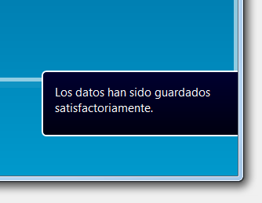

Configuración de la aplicación¶
Permite configurar aspectos visuales y algún comportamiento de la aplicación.
La configuración es por usuario. El administrador puede guardar su configuración como plantilla para todos los nuevos usuarios (y para aquellos que no han modificado su configuración). Utiliza el botón Guardar plantilla.
Configuración general¶
La configuración general configura varios comportamientos de la aplicación
Notificaciones¶
Las operaciones como Guardar o Eliminar producen notificaciones.

Notificaciones aparecen en la parte abajo de la pantalla y se ocultan automáticamente después de unos 5 segundos. La notificación no se oculta si posiciona encima el puntero.
Estilo¶
La configuración permite indicar colores de fondo de la pantalla o una imagen.
La opción de tema permite seleccionar entre Blanco y Blanco Mini. La principal diferencia esta en los tamaños de los botones, pestañas y tamaño de la letra. La versión mas pequeña es válida para pantallas con menor resolución.
Opción Usar tarjeta gráfica sirve para habilitar el uso de la aceleración por hardware de la visualización y debería estar seleccionada. Sin embargo si la visualización no es correcta (desaparecen menús, no se ve parte de la pantalla etc.) prueba deshabilitar la opción. Hay que salir del programa para que toma efecto.
Atajos de teclado¶
Configuración de varios atajos de teclado. Hay que tener cuidado en la elección de teclas porque si coinciden con teclas utilizadas por defecto en windows no van a funcionar. Por ejemplo F4 se utiliza para abrir desplegables o F2 para editar casillas de las cuadrículas. Si esta dentro de una cuadrícula la tecla F2 va a editarla en lugar de hacer la función que ha asignado en esta pantalla.
Conexiones¶
Pestaña Conexiones sirve para configurar conexión con varias empresas. Si trabaja con una empresa no hace falta guardar la conexión.